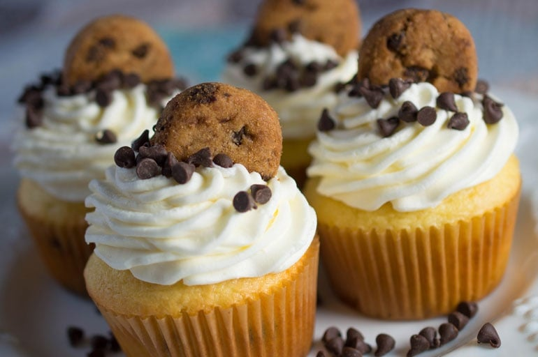

Chocolate Chip Cupcakes
These treats feature a moist, buttery vanilla base—often referred to as a “birthday cake” sponge—studded with plenty of semi-sweet chocolate chips. The magic happens in the oven: while the cake stays light and fluffy, the chips soften into little pockets of melty cocoa.
Ingredients
For the Cupcakes
- 1½ cups All-purpose flour
- ¾ cup Granulated sugar
- 1½ tsp Baking powder
- ½ tsp Salt
- ½ cup (1 stick) Unsalted butter, softened
- 1 large Egg, room temperature
- ½ cup Whole milk (or sour cream for extra moisture)
- 2 tsp Vanilla extract
- ¾ cup Semi-sweet mini chocolate chips (mini chips stay suspended better in the batter than large ones)
For the Vanilla Bean Frosting
- 1 cup (2 sticks) Unsalted butter, softened
- 3–4 cups Powdered sugar, sifted
- 2 tbsp Heavy cream or milk
- 1 tbsp Vanilla extract (or vanilla bean paste)
- Pinch of Salt
Instructions
- Preheat and Prep. Preheat your oven to 350°F (175°C). Line a standard 12-cup muffin tin with paper liners.
- Cream the Butter and Sugar. In a large bowl (or stand mixer), beat the softened butter and granulated sugar together on medium-high speed for about 3 minutes. The mixture should become pale and fluffy.
- Add Wet Ingredients. Beat in the egg and vanilla extract until well combined. Scrape down the sides of the bowl to ensure everything is incorporated.
- Mix Dry Ingredients. In a separate medium bowl, whisk together the flour, baking powder, and salt.
- Combine (The Alternating Method).
Turn the mixer to low speed. Add about half of the dry ingredients, then pour in the milk. Finish with the remaining dry ingredients.
Pro Tip: Mix only until the flour streaks disappear. Overmixing can lead to a dense, tough cupcake. - The Chocolate Chips. Toss your chocolate chips with a tiny pinch of flour (this prevents them from sinking to the bottom) and gently fold them into the batter using a spatula.
- Bake. Fill each cupcake liner about two-thirds full. Bake for 18 to 22 minutes, or until a toothpick inserted into the center comes out clean. Let them cool in the pan for 5 minutes, then transfer to a wire rack to cool completely.
- Frost and Decorate. While the cakes cool, beat the frosting ingredients (butter, powdered sugar, cream, and vanilla) until smooth and airy. Pipe or spread onto the cooled cupcakes and top with a few extra chocolate chips for flair.